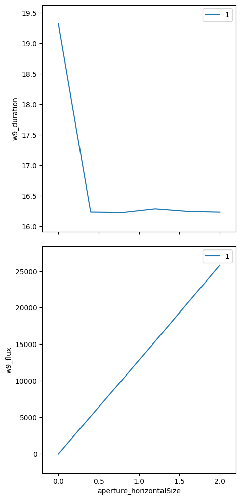
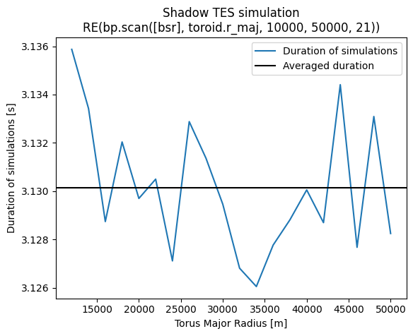

Shadow Simulations#
This section is based on the TES beamline example.
Hint: See the List of predefined simulations in Sirepo for examples of identifiers for different beamlines.
Run “Beamline” Shadow3 simulations#
This example repeats the first simulation in “Optical Elements as Ophyd Objects”, but instead uses Shadow3 to run the simulation.
Start ipython and run the following where sim_id is the UID for the simulation we are working with:
[1]:
%run -i ../../../examples/prepare_det_env.py
from sirepo_bluesky.sirepo_bluesky import SirepoBluesky
from sirepo_bluesky.sirepo_ophyd import BeamStatisticsReport, create_classes
connection = SirepoBluesky("http://localhost:8000")
data, schema = connection.auth("shadow", sim_id="00000002")
classes, objects = create_classes(connection=connection)
globals().update(**objects)
print(f"Number of points before change: {data['models']['simulation']['npoint']}")
data["models"]["simulation"]["npoint"] = 1000000
print(f"Number of points after change: {data['models']['simulation']['npoint']}")
aperture.horizontalSize.kind = "hinted"
w9.duration.kind = "hinted"
(uid,) = RE(bp.scan([w9], aperture.horizontalSize, 0, 2, 6))
hdr = db[uid]
tbl = hdr.table(fill=True)
print(tbl)
w9_image = np.array(list(hdr.data("w9_image")))
Number of points before change: 100000
Number of points after change: 1000000
Transient Scan ID: 1 Time: 2023-07-28 22:26:13
Persistent Unique Scan ID: '844ed21d-6ea1-4490-8533-9ed9327a55c6'
New stream: 'primary'
+-----------+------------+-------------------------+-------------+------------+
| seq_num | time | aperture_horizontalSize | w9_duration | w9_flux |
+-----------+------------+-------------------------+-------------+------------+
| 1 | 22:26:34.1 | 0.000 | 18.281 | 0.000 |
| 2 | 22:26:52.4 | 0.400 | 16.402 | 5138.520 |
| 3 | 22:27:09.4 | 0.800 | 15.199 | 10251.164 |
| 4 | 22:27:26.5 | 1.200 | 15.202 | 15406.536 |
| 5 | 22:27:43.6 | 1.600 | 15.201 | 20619.667 |
| 6 | 22:28:00.7 | 2.000 | 15.204 | 25819.524 |
+-----------+------------+-------------------------+-------------+------------+
generator scan ['844ed21d'] (scan num: 1)
time \
seq_num
1 2023-07-28 22:26:34.117327452
2 2023-07-28 22:26:52.415841579
3 2023-07-28 22:27:09.471637249
4 2023-07-28 22:27:26.529273510
5 2023-07-28 22:27:43.661985636
6 2023-07-28 22:28:00.709021330
w9_sirepo_data_json \
seq_num
1 {"models": {"beamStatisticsReport": {"driftDiv...
2 {"models": {"beamStatisticsReport": {"driftDiv...
3 {"models": {"beamStatisticsReport": {"driftDiv...
4 {"models": {"beamStatisticsReport": {"driftDiv...
5 {"models": {"beamStatisticsReport": {"driftDiv...
6 {"models": {"beamStatisticsReport": {"driftDiv...
w9_sirepo_data_hash w9_duration \
seq_num
1 43b1fde45c06d13e7282a8d3a81a55b69fb8d806b152d2... 18.280962
2 2b8cff9a8e9ea52c2918d42404d0bbdb4f62e5b13a2d32... 16.401958
3 991e0ea7173deecaf2e9c149fa06142d3d78f3ca70f3bc... 15.199046
4 f283172c59a664f3d41aa97ae7b303272687671cd7014a... 15.202092
5 94424792433bcff2553bc7720e5e26f029a46a937b2926... 15.200894
6 a56219f3974111d2a02177da9cbf12effeda23cd416f13... 15.204010
w9_image w9_shape \
seq_num
1 [[0.0, 0.0, 0.0, 0.0, 0.0, 0.0, 0.0, 0.0, 0.0,... [100, 100]
2 [[0.0, 0.0, 0.0, 0.0, 0.0, 0.0, 0.0, 0.0, 0.0,... [100, 100]
3 [[0.0, 0.0, 0.0, 0.0, 0.0, 0.0, 0.0, 0.0, 0.0,... [100, 100]
4 [[0.0, 0.0, 0.0, 0.0, 0.0, 0.0, 0.0, 0.0, 0.0,... [100, 100]
5 [[0.0, 0.0, 0.0, 0.0, 0.0, 0.0, 0.0, 0.0, 0.0,... [100, 100]
6 [[0.0, 0.0, 0.0, 0.0, 0.0, 0.0, 0.0, 0.0, 0.0,... [100, 100]
w9_flux w9_mean w9_x w9_y w9_fwhm_x w9_fwhm_y \
seq_num
1 0.000000 0.000000 NaN NaN NaN NaN
2 5138.520058 0.513852 0.197259 -0.152572 1.108809 0.701000
3 10251.164164 1.025116 0.196433 -0.145201 1.141733 0.681383
4 15406.536271 1.540654 0.201374 -0.137640 1.186571 0.659964
5 20619.667190 2.061967 0.232234 -0.137607 1.242215 0.634798
6 25819.524119 2.581952 0.264168 -0.132240 1.296800 0.613439
w9_photon_energy w9_horizontal_extent \
seq_num
1 2500.00041 [-1000.0, 1000.0]
2 2500.00041 [-1.2336298496814044, 1.405929122101391]
3 2500.00041 [-1.3001551718158006, 1.4759384530988693]
4 2500.00041 [-1.3684114360191872, 1.5466178480457953]
5 2500.00041 [-1.4309472940233552, 1.6109566331651013]
6 2500.00041 [-1.5036858677506284, 1.695592271987839]
w9_vertical_extent w9_id w9_title w9_type \
seq_num
1 [-1000.0, 1000.0] 12.0 W9 watch
2 [-0.7103102913794072, 0.4591117629407924] 12.0 W9 watch
3 [-0.7162298148739806, 0.47877690974846177] 12.0 W9 watch
4 [-0.7162298148739806, 0.49331718361385357] 12.0 W9 watch
5 [-0.7162298148739806, 0.49331718361385357] 12.0 W9 watch
6 [-0.7162298148739806, 0.5058855096921268] 12.0 W9 watch
w9_element_position aperture_horizontalSize
seq_num
1 57.142 0.0
2 57.142 0.4
3 57.142 0.8
4 57.142 1.2
5 57.142 1.6
6 57.142 2.0

[2]:
from mpl_toolkits.axes_grid1 import ImageGrid
print(f"Data shape: {w9_image.shape}")
num_frames = w9_image.shape[0]
ncols = 2
nrows = int(np.ceil(num_frames / ncols))
fig = plt.figure()
grid = ImageGrid(
fig,
(1, 2, ncols, nrows),
nrows_ncols=(nrows, ncols),
axes_pad=0.5,
aspect=False,
)
for ax, im in zip(grid, w9_image[:, ...]):
ax.imshow(im, aspect="auto")
Data shape: (6, 100, 100)

Run “Beam Statistics” Sirepo/Shadow app simulations#
In this example, we scan the toroidal mirror’s radius and collect the results of the “Beam Statistics” report on the “Beamline” page of Sirepo/Shadow app. At the end of the execution, we provide the timing report for these simulations.
[3]:
%run -i ../../../examples/prepare_det_env.py
from sirepo_bluesky.sirepo_bluesky import SirepoBluesky
from sirepo_bluesky.sirepo_ophyd import BeamStatisticsReport, create_classes
connection = SirepoBluesky("http://localhost:8000")
data, schema = connection.auth("shadow", sim_id="00000002")
classes, objects = create_classes(connection=connection)
globals().update(**objects)
bsr = BeamStatisticsReport(name="bsr", connection=connection)
toroid.r_maj.kind = "hinted"
bsr.duration.kind = "hinted"
scan_range = (10_000, 50_000, 21)
(uid,) = RE(bp.scan([bsr], toroid.r_maj, *scan_range))
hdr = db[uid]
tbl = hdr.table()
print(tbl)
Transient Scan ID: 1 Time: 2023-07-28 22:28:09
Persistent Unique Scan ID: '3434102f-08a2-4f36-8038-a6b6b0e19002'
New stream: 'primary'
+-----------+------------+--------------+--------------+
| seq_num | time | toroid_r_maj | bsr_duration |
+-----------+------------+--------------+--------------+
| 1 | 22:28:13.0 | 10000.000 | 3.057 |
| 2 | 22:28:16.2 | 12000.000 | 3.055 |
| 3 | 22:28:19.3 | 14000.000 | 3.053 |
| 4 | 22:28:22.4 | 16000.000 | 3.054 |
| 5 | 22:28:25.5 | 18000.000 | 3.054 |
| 6 | 22:28:28.6 | 20000.000 | 3.055 |
| 7 | 22:28:31.8 | 22000.000 | 3.057 |
| 8 | 22:28:34.9 | 24000.000 | 3.056 |
| 9 | 22:28:38.0 | 26000.000 | 3.055 |
| 10 | 22:28:41.1 | 28000.000 | 3.055 |
| 11 | 22:28:44.3 | 30000.000 | 3.054 |
| 12 | 22:28:47.4 | 32000.000 | 3.053 |
| 13 | 22:28:50.5 | 34000.000 | 3.054 |
| 14 | 22:28:53.6 | 36000.000 | 3.055 |
| 15 | 22:28:56.7 | 38000.000 | 3.055 |
| 16 | 22:28:59.9 | 40000.000 | 3.057 |
| 17 | 22:29:03.0 | 42000.000 | 3.056 |
| 18 | 22:29:06.1 | 44000.000 | 3.057 |
| 19 | 22:29:09.2 | 46000.000 | 3.057 |
| 20 | 22:29:12.3 | 48000.000 | 3.055 |
| 21 | 22:29:15.5 | 50000.000 | 3.054 |
+-----------+------------+--------------+--------------+
generator scan ['3434102f'] (scan num: 1)
time \
seq_num
1 2023-07-28 22:28:13.078698635
2 2023-07-28 22:28:16.203098536
3 2023-07-28 22:28:19.321800947
4 2023-07-28 22:28:22.443038702
5 2023-07-28 22:28:25.566741705
6 2023-07-28 22:28:28.687477350
7 2023-07-28 22:28:31.810885906
8 2023-07-28 22:28:34.933814526
9 2023-07-28 22:28:38.057989836
10 2023-07-28 22:28:41.182825327
11 2023-07-28 22:28:44.307865381
12 2023-07-28 22:28:47.426756620
13 2023-07-28 22:28:50.544780016
14 2023-07-28 22:28:53.663826942
15 2023-07-28 22:28:56.782238245
16 2023-07-28 22:28:59.903188467
17 2023-07-28 22:29:03.025809526
18 2023-07-28 22:29:06.148138046
19 2023-07-28 22:29:09.269448042
20 2023-07-28 22:29:12.389375210
21 2023-07-28 22:29:15.506463766
bsr_sirepo_data_json \
seq_num
1 {"models": {"beamStatisticsReport": {"driftDiv...
2 {"models": {"beamStatisticsReport": {"driftDiv...
3 {"models": {"beamStatisticsReport": {"driftDiv...
4 {"models": {"beamStatisticsReport": {"driftDiv...
5 {"models": {"beamStatisticsReport": {"driftDiv...
6 {"models": {"beamStatisticsReport": {"driftDiv...
7 {"models": {"beamStatisticsReport": {"driftDiv...
8 {"models": {"beamStatisticsReport": {"driftDiv...
9 {"models": {"beamStatisticsReport": {"driftDiv...
10 {"models": {"beamStatisticsReport": {"driftDiv...
11 {"models": {"beamStatisticsReport": {"driftDiv...
12 {"models": {"beamStatisticsReport": {"driftDiv...
13 {"models": {"beamStatisticsReport": {"driftDiv...
14 {"models": {"beamStatisticsReport": {"driftDiv...
15 {"models": {"beamStatisticsReport": {"driftDiv...
16 {"models": {"beamStatisticsReport": {"driftDiv...
17 {"models": {"beamStatisticsReport": {"driftDiv...
18 {"models": {"beamStatisticsReport": {"driftDiv...
19 {"models": {"beamStatisticsReport": {"driftDiv...
20 {"models": {"beamStatisticsReport": {"driftDiv...
21 {"models": {"beamStatisticsReport": {"driftDiv...
bsr_sirepo_data_hash bsr_duration \
seq_num
1 6df45f534c429d3ce2ac6035a27c1826cb5d61059b64bd... 3.056792
2 dcb6016afc14cf5dee9a960b4edc0277ebb41e5c1cb11e... 3.054545
3 866db9fe8db0ebcd0222f0dfd7d44808aec9ee501c1bfc... 3.053420
4 bc01f578aa9e4e8cde985d0a5c593ae626b7f578016e94... 3.054310
5 0a9a346c7ce36b1b97b8080206c7ffbb46120d10a833ea... 3.054073
6 c001bc76a847ffe934b903630fb9c2b3f5dfc66be2f1c4... 3.055248
7 5f709df69d2f9012d9cf5696d7a5f82e86c354cd29835a... 3.057079
8 a4c6369d49a6acb440e4937056be87d63e5cc7a55e940a... 3.055898
9 1f31ed1a49ee74685ecec70a681d3a3b9a89791efb35e8... 3.054777
10 5fb03fc9bba636eb6c5ea73644af36b5604f1781452f88... 3.054726
11 b7cd8ebe31961998d1c8168c6e4b57abde49fe966bd080... 3.054072
12 8b3cc90c822df467d90c4b581f65900ed533e94b0ac126... 3.052915
13 b679397686003e328e120f2c4f735d0eb07e435dfd79a6... 3.054437
14 83b1b646368adde8fe45644b47926c9cc206b75521360b... 3.055307
15 c1d9a24d901c37f546b7313cfe052093d407da29bda465... 3.054626
16 148602ecc2607655d7173ec41f082c12aff52a715afe41... 3.056549
17 8a6ca0d8cec6f35241be684b7ec1be887eb20acff96cb0... 3.056053
18 ea830827174885c70f84fa5ae58cb028c760bd537118ff... 3.056708
19 2490c0be74947bc4f20fab5bffbaed55b9b61c268100c8... 3.056599
20 97df283d0447881063dbaf43facfcf83932e06462b0cc7... 3.054538
21 6d6e2951c2171de7328e2a1d7df11a51e2af6ebe03282d... 3.054318
bsr_report toroid_r_maj
seq_num
1 {"angxpzp": [0.0, -1.7793448589854113e-20, -3.... 10000.0
2 {"angxpzp": [0.0, -1.7793448589854113e-20, -3.... 12000.0
3 {"angxpzp": [0.0, -1.7793448589854113e-20, -3.... 14000.0
4 {"angxpzp": [0.0, -1.7793448589854113e-20, -3.... 16000.0
5 {"angxpzp": [0.0, -1.7793448589854113e-20, -3.... 18000.0
6 {"angxpzp": [0.0, -1.7793448589854113e-20, -3.... 20000.0
7 {"angxpzp": [0.0, -1.7793448589854113e-20, -3.... 22000.0
8 {"angxpzp": [0.0, -1.7793448589854113e-20, -3.... 24000.0
9 {"angxpzp": [0.0, -1.7793448589854113e-20, -3.... 26000.0
10 {"angxpzp": [0.0, -1.7793448589854113e-20, -3.... 28000.0
11 {"angxpzp": [0.0, -1.7793448589854113e-20, -3.... 30000.0
12 {"angxpzp": [0.0, -1.7793448589854113e-20, -3.... 32000.0
13 {"angxpzp": [0.0, -1.7793448589854113e-20, -3.... 34000.0
14 {"angxpzp": [0.0, -1.7793448589854113e-20, -3.... 36000.0
15 {"angxpzp": [0.0, -1.7793448589854113e-20, -3.... 38000.0
16 {"angxpzp": [0.0, -1.7793448589854113e-20, -3.... 40000.0
17 {"angxpzp": [0.0, -1.7793448589854113e-20, -3.... 42000.0
18 {"angxpzp": [0.0, -1.7793448589854113e-20, -3.... 44000.0
19 {"angxpzp": [0.0, -1.7793448589854113e-20, -3.... 46000.0
20 {"angxpzp": [0.0, -1.7793448589854113e-20, -3.... 48000.0
21 {"angxpzp": [0.0, -1.7793448589854113e-20, -3.... 50000.0

[4]:
import json
import matplotlib.pyplot as plt
for idx in range(1, tbl["toroid_r_maj"].size + 1):
d = json.loads(tbl["bsr_report"][idx])
plt.figure(figsize=(16, 4))
plt.plot(d["s"], d["sigmax"], label="Horizonal RMS Beam Size [m]")
plt.plot(d["s"], d["sigmaz"], label="Vertical RMS Beam Size [m]")
plt.xlabel("Distance Along Beamline [m]")
plt.legend()
plt.title(f"toroid_r_maj = {tbl['toroid_r_maj'][idx]:.0f}")
/tmp/ipykernel_7815/2351232241.py:6: RuntimeWarning: More than 20 figures have been opened. Figures created through the pyplot interface (`matplotlib.pyplot.figure`) are retained until explicitly closed and may consume too much memory. (To control this warning, see the rcParam `figure.max_open_warning`). Consider using `matplotlib.pyplot.close()`.
plt.figure(figsize=(16, 4))


[5]:
data = np.array(tbl["time"].diff(), dtype=float)[1:] / 1e9
fig = plt.figure()
ax = fig.add_subplot()
ax.plot(np.linspace(*scan_range)[1:], data, label="Duration of simulations")
ax.set_ylabel("Duration of simulations [s]")
ax.set_xlabel("Torus Major Radius [m]")
ax.axhline(data.mean(), color="k", label="Averaged duration")
ax.legend()
title = (
f"Shadow TES simulation\n"
f"RE(bp.scan([bsr], toroid.r_maj, "
f"{', '.join([str(x) for x in scan_range])}))"
)
ax.set_title(title)
plt.show()
